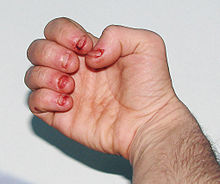

LNS科普与关爱
作为在新闻与传播学院学习近四年的学生，我们越来越意识到新闻意义的重要性，需要做一些具有新闻价值性与社会性的报道。在近期一项以罕见病为主题的纪录片的拍摄中，我们有幸作为一员前往重庆某医院，在拍摄闲暇之余，与其中一位病患朝夕相处了数日后，其愿意与我们沟通交流。在感慨生命不公的同时，我们愈发了解他们的家庭，便想要帮助他们获得更多的社会关注，尤其是这种罕见病在国内鲜少得到大众深知。也就是在这个前提下，我们想借此机会来以网页的形式介绍所接触了解到的这一特殊患者——LNS患者，又爱称为“蚕宝宝”。呼唤大众关爱这个特殊人群并且把药物价格降下去。
Lesch-Nyhan综合症（Lesch-Nyhan syndrome）：也称为自毁容貌综合征，是X一连锁隐性遗传的先天性嘌呤代谢缺陷病，发病率约38万分之一。源于次黄嘌呤一鸟嘌呤磷酸核糖转移酶(HGPRT)缺失。缺乏该酶使得次黄嘌呤和鸟嘌呤不能转换为IMP和GMP，而是降解为尿酸，高尿酸盐血症引起早期肾脏结石，逐渐出现痛风症状。患者智力低下,有特征性的强迫性自身毁伤行为。
